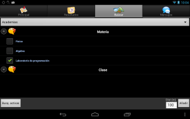
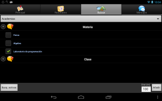
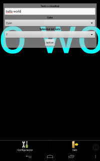
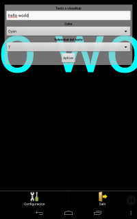

BIO
entretenido en....
- lenguajes humanos: Aleman
- lenguajes máquina: graphql, react, kotlin, swift 4
Mis pasiones son la naturaleza y la tecnología. El cómo encajar ambas es simplemente una cuestión de tiempo. El tiempo siempre se divide... en partes iguales. Pero cuando la duración de los intervalos es distinta entonces es un problema.
Me gusta definirme como una persona que vive para resolver problemas. Un problema no está resuelto si no ha consumido una parte razonable de tu tiempo.
El tiempo no está para aprovecharlo ni para perderlo. Simplemente es la cinta transportadora que mueve tu día a día.
A mi también me lo contaron y lo olvidé, lo vi y lo entendí, y lo hice y lo aprendi. Pero muchas veces, y eso es lo que hace interesantes los día a día.
Mantén tu vida interesante, eso hará que tengas un día a día cargado de problemas. Pero te sobrará tiempo para hacer lo que más te apasione.
EXPERIENCIA
Programador y diseño de aplicaciones web
Como desarrollador web cuento con amplia experiencia en la programación de aplicaciones web Back-End y el diseño de interfaces web de usuario, usando tecnologías Java (Spring, JSF, JSP, Servlets, ORM Hibernate).
También he desarrollado proyectos con tecnología Microsoft .NET Framework en ASP+ MVC, así como con Python (framework Django) y PHP5.
Como diseñador, tengo habilidades en la creación de sitios web basados en los estándares HTML5 y CSS3, con dominio de Javascript con frameworks (jQuery, AJAX, Zepto), y destrezas de diseño adaptable RWD y enfocado a la usabilidad y accesibilidad. También tengo conocimientos en la aplicación de técnicas avanzadas para posicionamiento y visibilidad en buscadores.
Diseño sitios web tanto personales como para empresas y corporativas
- Realizo diseños de portales con finalidad docente para centros de formación, con soporte para la administración de cursos, el material didáctico y el alumnado
- Diseño portales E-Comerce para venta online y tiendas virtuales
Desarrollo de aplicaciones móviles
Me encuentro involucrado en la realización de un proyecto ERP con desarrollo nativo para plataformas iOS y Android.
También tengo experiencia en desarrollo nativo para la plataforma Windows Mobile.
Trabajo en integración con aplicaciones de terceros, y uso de APIS de Google, como Google Maps, Google Driving Directions entre otras muchas, además de consumo de servicios web, siendo mi especialización proyectos SIG y geolocalización.
Tengo conocimientos en la realización aplicaciones móviles multiplataforma con HTML5 responsivo, con framework híbrido y Javascript (Phonegap, Appcelerator, Xamarin).
framework y lenguajes:
- Firebase
- Kotlin
- Swift v4 y Objetive-C, con Cocoa Touch API
- Node.js, express. REST stack
- J2EE: JSP y Servlets, Spring, JSF. Hibernate
- Python con Django
- Framework Microsoft .NET 3.5: C#, VisualBasic Linq, ASP .NET (MVC)
- Android SDK: API 19 (4.4 KitKat) y API 25 (7.1 Nougat)
- Google Maps API para Android versión 2
- Google Maps API para javascript versión 3
- Windows Mobile SDK versión 6, Pocket PC
- C, C++
- PHP, Twig, Smarty
- Javascript, jQuery, AJAX, Zepto
- HTML5, CSS3, Bootstrap, diseño responsivo
- Servicios web REST, JSON, XML, JSON-RPC
base de datos:
- Administración de Sistemas Gestores de Base de Datos: MySql, PostgreSQL y Microsoft SQL Server
- Bases de Datos relacionales DML y DDL
- Bases de Datos empotradas: SQLite
otras herramientas:
- SCRUMM, continuous integration, BDD
- Entornos de desarrollo: XCode, Android Studio, MS Visual Studio 2010, Eclipse y NetBeans
- Administración de servidores web: Glassfish, Tomcat, Apache server, Microsoft IIS
- Control de versiones: Subversion, GIT, Mercurial, Microsoft Visual Source Safe
- Experiencia de desarrollo en la plataforma de gestión de rutas OpenGTS y APIS de Google Maps
- Experiencia de desarrollo en Wordpress y plugins
- Experiencia de desarrollo en plataformas gestoras de contenidos: OpenCMS, OpenERP, Moodle, Magento

Aplicación web desarrollada bajo Node.js y express que implementa el juego de las preguntas y respuestas, permitiendo CRUD de los comentarios y Quizzes, mediante implementación REST.
Se ejecuta sobre el servicio de despliegue de aplicaciones web Heroku, e implementa un mecanismo de control de sesión de usuario.
Ir a Quizzes game
Búsqueda de puntos de interés pertenecientes a una categoría determinada. Como características importantes de la aplicación diferenciadoras de otras muchas aplicaciones similares disponibles, destacan:
- Posibilidad de añadir nuevas categorías de búsqueda a la aplicación de usuario de manera remota y transparente, para tener siempre la aplicación actualizada de manera automatizada.
- Establecimiento de diferentes criterios de filtrado, según el tipo de búsqueda que se realiza. A diferencia de otras aplicaciones disponibles, que sólo filtran resultados por medio de unos criterios genéricos comunes a todas las categorías de búsqueda, disponemos de una serie de criterios de filtrado específicos a la categoría, que se podrán seleccionar para obtener los resultados que más se ajusten a nuestra necesidad.
- Las búsquedas se realizan en tiempo real siguiendo el movimiento del usuario, para puntos de interés cercanos al usuario.
- Obtención de la ruta para alcanzar el destino desde la posición actual.
- Sistema de valoración y opiniones sobre los destinos.
 

próximamente más información [...]

Esta aplicación web permite la manipulación de la información que se utiliza en la aplicación Chaotic Search. Mediante ésta aplicación se podrá crear los puntos de interés, mediante búsqueda asistida y mapas de Google. También podrá gestionar los tipos de búsqueda y sus criterios asociados, que le permitirán la catalogación de los puntos de interés, para proporcionar un filtrado adecuado de los mismos. Por último se proporciona un canal de moderación para las opiniones y valoraciones que los usuarios de la aplicación genera en torno a la misma.


Esta pequeña aplicación le permitirá escribir mensajes textuales y mostrarlos sobre la pantalla al estilo de una marquesina. Se puede personalizar el tamaño del texto, el color y la velocidad de desplazamiento del texto. Puede ser utilizado para permitir la comunicación visual por medio de textos cortos entre personas a una cierta distancia, simplemente mostrando el contenido de la pantalla de su smartphone.
 

Con ésta aplicación podrá tener al alcance de la mano rápidas recetas para poder cocinar un plato express con los ingredientes que tengas en la despensa. Nuestro sistema se encargará de navegar por los sitios de recetas más relevantes y mostrarte las mejores sugerencias para que en poco tiempo, y con tu talento, puedas disfrutar de un estupendo plato!
Aplicación de escritorio para gestionar tus notas. ¿Cuántas veces has deseado tener en orden todos los enlaces web, datos de los contactos, fragmentos de código, nombres y números de página de los libros de consulta más frecuentemente usados, entre otras muchas cosas? Y lo más importante, todo en un lugar bien organizado. Con ésta aplicación, podrás llevar siempre contigo todo ello, teniendo siempre bajo control cómo desea organizar cada cosa y cómo visualizarlo. Además, la aplicación incluye una serie de características adicionales, como un planificador de tareas consistente en una nota visual en pantalla, con cuenta atrás, para alertar de los time-outs de tus tareas, y muchas más.


Esta aplicación te permitirá comunicarte con un amigo mientras tengas tus manos ocupadas, simplemente mirando a la pantalla de tu smartphone. De ésta forma, se mostrará en la misma durante el tiempo requerido, por ejemplo unas referencias indicando la descripción de un lugar que estás buscando y que algún conocido te está ayudando a localizar. Al mismo tiempo, una voz leerá el contenido del mensaje recibido, para que no distraigas la atención.
¿Cómo funciona? El programa dispondrá un mecanismo para que se indique el destinatario del mensaje y a continuación, se le dicta el contenido del mismo que se quiera enviar. Asímismo, utilizará reconocimiento de voz para generar un mensaje textual que se dirigirá a la persona indicada, de modo que su destinatario pueda tener en un lugar bien visible aquella información que necesita y pueda oirlo igualmente sin tener que perder la atención
Bajo algunas circunstancias, más práctico que una llamada telefónica.
CAJON DESASTRE
- Miguel de Icaza (GNOME, Xamarin) también piensa diferente
- De Cómo organizar tu tiempo es la base...
- Popping the "why?" stack
- code project - for those who code
- swift resources: natasha the robot
- ios resources: Raywenderlich - tutorials for developers & gamers
- ios resources: Cocoa Mental
- ios resources: NSHipster